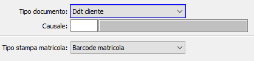

Stampe documenti
Tramite questa tabella è possibile definire, per tipo documento e causale, se stampare il codice oppure il codice a barre oppure non stampare la matricola su documenti/movimenti. L’assenza di record in questa tabella disabilita la stampa delle matricole su documenti/movimenti

TIPO DOCUMENTO: indica il tipo documento per cui configurare la stampa, valori possibili:
Tutti
Ddt cliente
Fattura cliente
Packing list
Vendita al dettaglio
Autofatture
Ddt fornitore
Fattura fornitore
Movimento di magazzino
Trasferimento ubicazioni
Inventario fisico
Liste di prelievo
DDT terzista
Movimento magazzino fasi
Rientro da lavorazione
Buono di prelievo
Versamento ODL
Componenti ODL
Inventario fisico per fase
CAUSALE: indica la causale del documento, del tipo indicato precedentemente, per cui si vuole specificare la parametrizzazione della stampa. Sul campo sono attive funzioni di ricerca sulla tabella stessa. Se il campo viene lasciato vuoto si intende tutte le causali del tipo documento, eccetto le causali specificate singolarmente.
TIPO STAMPA MATRICOLA: definisce la tipologia di riferimento matricola da stampare per i parametri inseriti in precedenza. Valori possibili:
Codice matricola
Barcode matricola
Gruppi matricole (da.. a..)